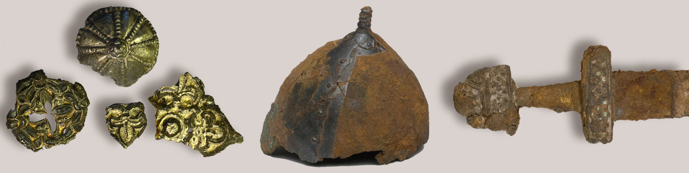
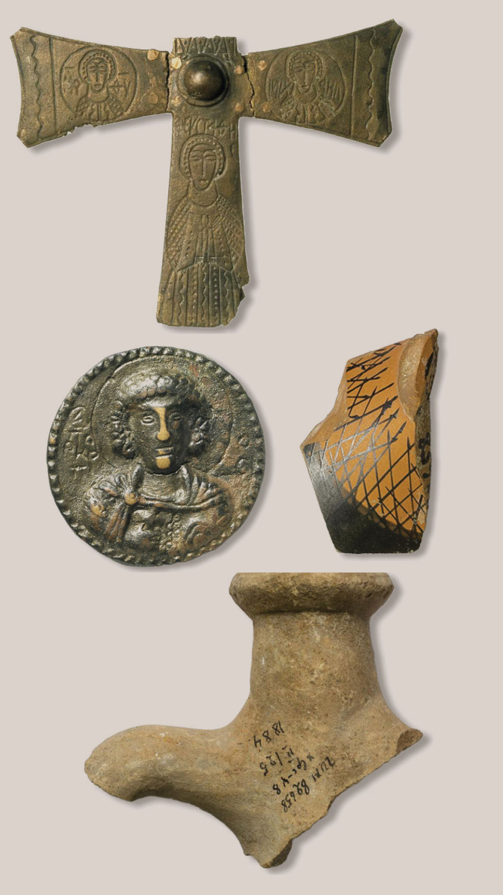
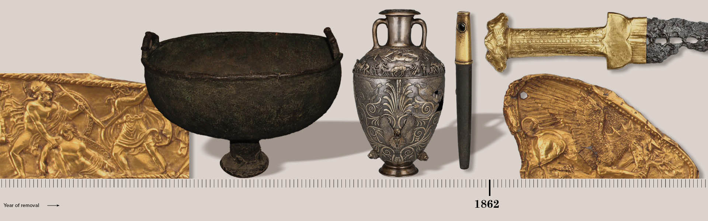
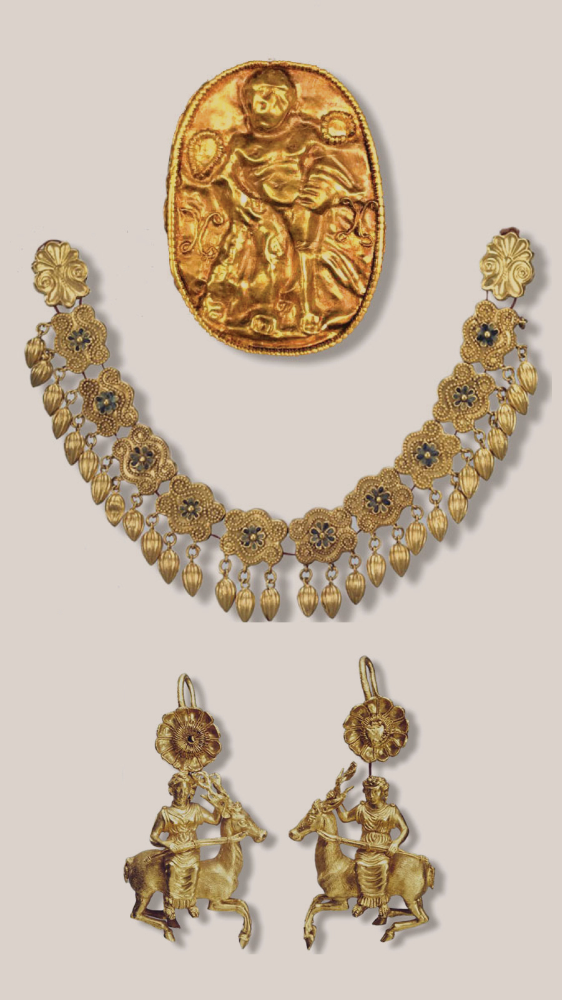
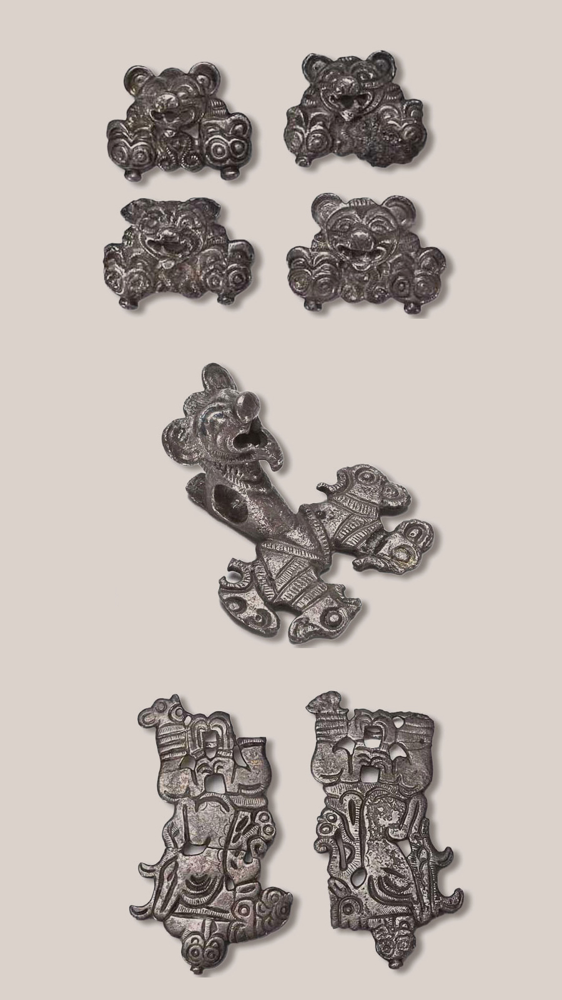
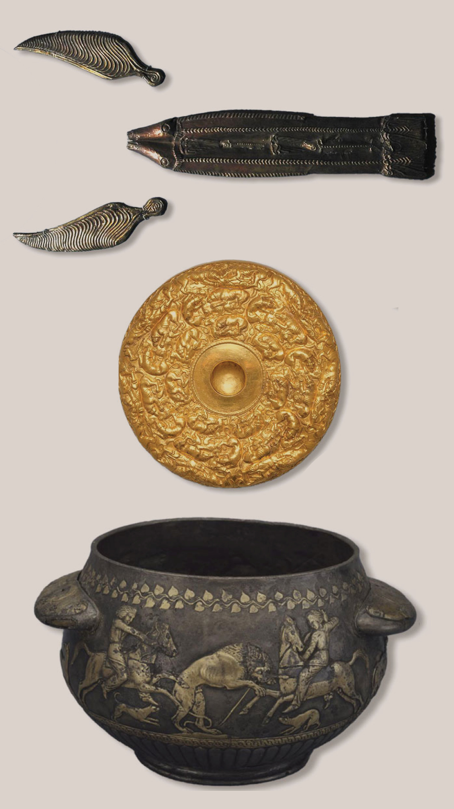
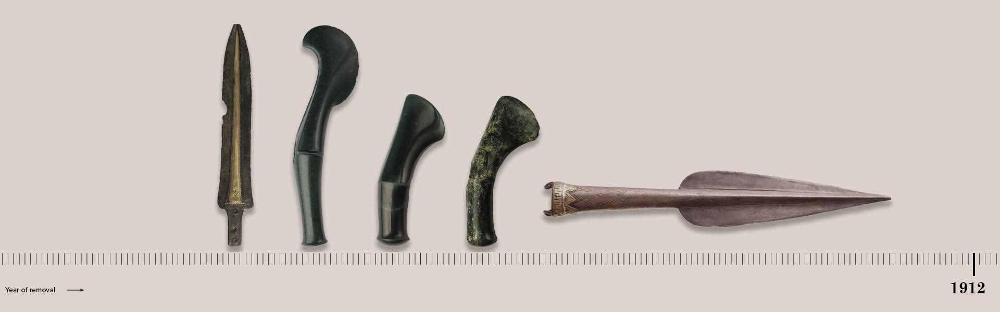
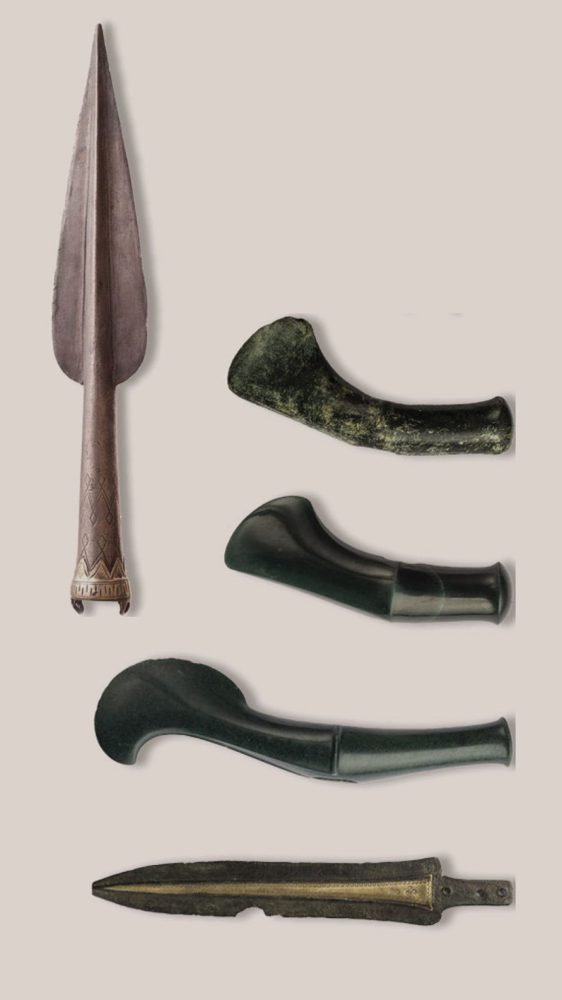

The study of the online collections of the Hermitage and the State Historical Museum of Russia by TEXTY
revealed 110,000 artifacts that had been exported from the territory of modern Ukraine to Russia in
different historical periods. Most of them had been moved to Russia before Ukraine declared independence.
Our study excluded works of art, icons and weapons because their origin is extremely difficult to trace. We
also disregarded the items looted during the current war. Finally, our study revealed some of the tricks
used to hide valuable objects in Russia. Most of the artifacts may seem quite ordinary which is especially
true about pieces of ancient ceramics, work tools, etc. However, there are also some priceless artifacts
made of gold and precious stones.
Not only are the removed artifacts intended to demonstrate the mythical connection of the modern Russia and the Kyivan Rus, but also to show the deep historical roots of the Russian people who have been trying to appropriate the ancient history of Ukraine, the Paleolithic era, Trypillya culture, the ancient and Scythian era.
The Sacred Meaning
The Vyshgorod icon of the Mother of God, which was renamed into “Our Lady of Vladimir”, is on display in the Tretyakov Gallery in Moscow. The icon is considered the main Orthodox relic of Russia.
In 1155, the icon was taken from the half-ruined Vyshgorod by the Prince of Volodymyr-Suzdal Andrii Bogolyubsky, son of Yury Dolgoruky during a raid on Kyiv.
In the 12th century, the Kyiv principality stood out among other principalities (Novgorod, Pskov lands, etc.) as a prominent cultural and religious center. Therefore, the icon from Kyiv was very special to the northern prince in terms of value.
Actually, Kyiv is still held sacred in modern Russia which is stubbornly trying to identify itself as a descendant of the powerful ancient Rus.
Why?
”This gave Muscovy, albeit fake, the veneer of a cultural, civilized state with an ancient historical tradition and one with Byzantine-Kyiv church metrics”, explains Ukrainian historian Yaroslav Dashkevych (in the foreword to the book by Yevhen Nakonechny “Stolen Name. Why Rusyns Turned into Ukrainians”). “Not only did such fabricated genealogy enable the grand dukes and tsars to use a stylized version of the name for their state, but it also helped to legitimize the aggressive policy of taking control over the territories of Rus and claiming them to be Russian — the latter remains at the top of our northern neighbor’s agenda to this day”.
The Grave Losses
Cultural artifacts from the territory of modern Ukraine ended up in Polish, Swedish, Lithuanian, Austro-Hungarian, German and American museums at different times and under various, mostly tragic circumstances and often via Russia.
“It was from Muscovy and later the Russian Empire that Ukraine suffered the biggest losses of cultural artifacts” writes Serhii Kot, a prominent Ukrainian scientist who spent years researching the fate of Ukrainian heritage and the restitution (return) of valuables to the countries of their origin, in his monograph.
The author of the monograph died in March 2022 when Russia was once again looting Ukrainian museums in the newly captured cities of Mariupol, Kherson, and Berdyansk.
Spontaneous looting by troops and organized removal of valuables from the enslaved territories to the imperial center are the two main sources of Ukrainian exhibits which ended up in Russia. The pattern has remained the same for many centuries.
Special decrees and orders used to be in place in the Russian empire and archaeological expeditions were systematically arranged to extract historical heritage from the colonized territories. Later, this practice continued in the Soviet Union.
Private individuals would also contribute to the removal of valuables from Ukraine to Russia by selling and taking them when moving to Russia.
Today, paintings stolen from Jews by the Nazi during the Holocaust are being returned to their rightful owners. There has been a discussion on returning valuable artifacts from the world-famous museums of Europe to the museums in the once colonized India and African countries. Are there any chances to return the treasures that had been moved to the territory of Russia for centuries before the declaration of Ukraine’s independence to Ukraine?
“From the legal standpoint, it is impossible”, responds Denys Yashny, leading researcher of the national preserve “Kyiv-Pechersk Lavra” who coordinates a monitoring group within NGO “Crimean Institute for Strategic Studies” tasked with documenting cultural losses during the war. “After all, a significant part of the territory of Ukraine was first part of the Russian Empire, and later — of the Soviet Union when the removal happened?”
How many were removed and when?
Even if such discussion about the return were to begin in the context of the modern decolonization of Russia, would Ukraine be ready to provide a complete list of artifacts to support its claims?
The wealth of artifacts which were moved to Russia over the centuries is simply unfathomable. These are unique artifacts, manuscripts, old prints, works of art, antiquities, religious and Cossack relics, and various weapons. We might be talking about hundreds upon hundreds of thousands of exhibits.
There is still no single register of museum treasures stolen by Russia from Ukraine since 2014. Judging by the public statements of the Ministry of Culture, certain work is underway, but the results are yet to be seen. Despite disparate testimonies and initiatives to trace individual exhibits from individual regions, we are still far from seeing the whole picture.
To locate exhibits of Ukrainian origin in Russia, we decided to study Russian museum collections.
The image below shows 14 of the 110,000 exhibits which were removed from Ukraine. Most of the artifacts are parts of ceramic pots, tools etc. However, there are also many items made of gold, silver and precious stones.
The State Catalogue of the Museum Fund of Russia which offers unrestricted access contains about 3.5 million exhibits from 870 Russian museums. This is only a fraction of what is actually there since the State Hermitage (St. Petersburg) and the State Historical Museum of Russia (Moscow) alone hold 3 million and 4.5 million exhibits respectively.
Although the catalog was not very informative, some exhibits were quite amusing. For example, we found men's and women's underpants from Luhansk oblast which were produced in the 1990s in the museum of the Russian city of Belgorod.
Two Museums
We separately examined the online catalogs of two principal Russian museums: the State Hermitage and the State Historical Museum of Russia.
The study revealed 33.3 thousand artifacts which originate in the territory of the modern Ukraine in the Hermitage. The State Historical Museum of Russia had even more — 77.5 thousand.
Even the archaeological objects alone are just the tip of the iceberg: the collections of the both museums have many more treasures sourced from the territory of the modern Ukraine. For example, out of the 3 million exhibits in possession of the Hermitage only 825,000 appear on the online collection while the State Historical Museum only presents 2.2 million items online out of its 4.5 million exhibits.
The Quest for Identification
For the most part, finding museum pieces originating from the territory of the modern Ukraine was riddled with difficulties. Firstly, the majority of exhibits have missing data under the headers “Place of Discovery”, “Excavation Site”, “Country of Origin” etc.
Secondly, although the “Country of Origin” information related to the exhibit may simply say “Byzantium”, “the Roman Republic”, “Bosporan Kingdom'' or “Eastern Europe”, this may as well mean that the treasures were brought from Crimea and other parts of the modern Ukraine. If the exact location of the find is not given, it does not necessarily mean that the item was brought from Ukraine — it could have been found in Russia much later.
Thirdly, a typical label on an artifact found in the territory of Ukraine, which used to be part of the Russian Empire, would read “Russian empire, Melitopol district” or simply “Aksyutyntsy village”, “Kyshlyansky ravine” or “Podolskaya province”. There are names of numerous natural landmarks, villages and islands buried under the waters of the Dnieper. Since the locations could not be filtered automatically, it had to be done manually.
We found approximately 1,200 items which could be traced back to Ukraine among the 15,000 place names in the sections “Archaeological Objects” and “Numismatic Objects”.
For some exhibits, the place of origin is given as “Golden Horde” and the place of discovery is “Solcati, Crimea”. The exhibits for which the place of discovery was indicated only by the collection name such as “Archaeological material from the Berezan excavations” were also added to the selection.
This could either be the negligence of the museum workers or deliberate concealment. For what it is worth, such “forgetfulness” with regards to valuable exhibits is commonplace in the online catalog of the Hermitage.
The Dots on the Map
To show where exactly in Ukraine the treasures and artifacts were found and where they were taken from, we added approximate geodata to each find (with an accuracy of several kilometers if the name of the settlement is given, and several tens of kilometers if only the name of the province or county is given).
The State Historical Museum of Russia also has many exhibits from St. Michael’s Golden-Domed Monastery (more than a thousand items dating back to the 11th-19th centuries); Berezan Island in the Black Sea (Mykolaiv oblast); ancient settlements near the villages of Aksyutyntsi in Poltava oblast, Ghintsi in Kharkiv oblast; the settlements and mounds near rivers — the Dniester in Bukovyna and the Dnieper in the south of Kyiv oblast and downstream, near Melitopol and in Crimea.
As far as dating is concerned, the exhibits of Ukrainian origin in the museum fall into three major groups (approximately 20 thousand items each):
– from ancient times to the 1st millennium B.C. (Paleolithic, Mesolithic, Neolithic, Bronze Age);
– the Scythian-Sarmatian era and classical antiquity which partially coincide in time (7th century B.C.-4th century);
– the Rus period (10th–13th centuries).
The number of exhibits from Ukraine in possession of the State Historical Museum of Russia and the Hermitage
State Historical Museum of Russia and Hermitage
by periods of their origin
5 000
0
5 000
Paleolithic
До нашої ери
Mesolithic
Neolithic
Bronze and Iron Age
Scythian era
7 452
5 813
Sarmatian era
Antique era
the Migration Period
AD
The Rus era
the Kingdom of Galicia–Volhynia perıod
Cossack period
Paleolithic
Mesolithic
Neolithic
Bronze
and Iron Age
Scythian era
Sarmatian era
the Migration Period
The Rus era
Cossack period
5 000
the Kingdom of Galicia-
Volhynia perıod
0
7 452
5 000
Antique era
5 813
BC
AD
125
110
75
64
55
45
39
30
28
24
14
10
6
4
2
IX
VII
V
III
I
II
IV
VI
VIII
X
XII
XIV
XVI
XIX
millenia
centuries
5 000
Scythian era
Paleolithic
the Migration Period
Cossack period
Neolithic
0
7 452
the Kingdom of Galicia–
Volhynia perıod
5 000
Antique era
5 813
Bronze
and Iron Age
Sarmatian era
The Rus era
Mesolithic
BC
AD
125
110
75
64
55
45
39
30
28
24
14
10
6
4
2
IX
VII
V
III
I
II
IV
VI
VIII
X
XII
XIV
XVI
XIX
Тисяч років
Століття
2014-2015. Found in Halych, Registered in the Hermitage
The Hermitage catalog also contains information regarding the time of the first inventory. Those records, however, are far from being complete (22,500 items out of the total of 33,300).
According to those records, thousands of artifacts entered Russia during the Soviet era, and hundreds more followed after the declaration of Ukraine’s independence — for example, the 145 items from Solcati (Old Crimea) registered in 2000. There are dozens of artifacts dating back to the 12th century and found during excavations in the towns of Halych and Zvenyhorod in the west of Ukraine which were registered in 2014-2015. Those items might have entered Russia at an earlier time, and the records only show when the museum first took inventory. Alternatively, the Russian museums might have bought them out from archaeological looters. Those theories, however, deserve a dedicated study.
Conceal and Obfuscate: How the Hermitage Hides the Gems of its Collections
While researching the online archives of the Hermitage, we noticed a certain pattern: no information was given about the place of discovery or the name of the archaeological site for many valuable items originating from Ukraine.
The standard description of each museum exhibit consists of the identification and inventory numbers, the exhibit name, the place where it was found, the place of creation, the name of the archaeological site, information regarding materials / techniques, some keywords, the size, age dating, the name of the department / sector, collection, author, image link , language, and additional comments and annotations. The Hermitage states the year of taking inventory of the exhibit. However, many of the description sections are blank.
For example, one exhibit from the Kul-Oba mound near Kerch only has the “Archaeological Site” section filled out. Instead, the most valuable finds from the mound can only be traced by the inventory number and the name of the museum collection. Just look at the screenshots below and compare the descriptions of the silver horn and the gold exhibits from the Kul-Oba archeological site in the online catalog of the Hermitage.
The name of the archaeological site and the collection are given, and the inventory number begins with KO for Kul-Oba. Now, have a look at the descriptions of other items with the same letters in the inventory number.
The “round-bottomed vessel” is actually the unique world-famous cup made of electrum, a naturally occurring alloy of gold and silver, with relief decorations depicting scenes of Scythian life. Since “Archaeological Site” and “Excavation Site” sections are blank, they not displayed.
The same letters appear in the inventory numbers of the gold earrings in the photo above. The numbers which follow the letters might be the serial number of the exhibit originating from a certain archaeological site. It was by this code in the inventory number that we found the exhibits from Kul-Oba among other items in the collection.
A similar pattern is evident in relation to other exhibits and collections.
For example, the gold earrings found during the excavations of the ancient city of Nymphaion on Cape Aq Burun in Crimea near the modern Kerch. Here, in addition to the inventory number, it is the name of the collection that clearly indicates the origin of the artifact.
In comparison, the ring from the Pereshchepyna Treasure, the hoard found near the village of Mala Pereshchepyna in Poltava oblast, is more difficult to identify. Neither the place of discovery nor the archaeological site is given. The inventory number, however, seemed a bit odd: 1930-187.
The search of the downloaded online catalog returned an exhibit registered under the same number (1930-187), but with a different photo as given below. The picture offers irrefutable proof that it is the same ring from the Pereshchepyna Treasure excavated in Poltava oblast.
The open online catalog contains six more exhibits with the inventory numbers beginning with “1930-” and containing “Pereshchepyna Treasure” in the “Archaeological Site" section. These are not the most valuable artifacts from the hoard.
Items from Pereshchepyna Treasure, Hermitage. Photo credit: bnr.bg
In fact, there were many, many more.
The treasure found near the village of Mala Pereshchepina in Poltava oblast in 1912 was the most valuable find in the entire history of the Russian Empire and the later USSR. It was immediately taken to St. Petersburg where it has been stored in its entirety in the Hermitage Museum to this day.
In his monograph, the Ukrainian scientist Serhii Kot wrote that only the objects made of precious metals weighed more than 70 kg (20 kg of gold and 50 kg of silver).
The most famous find is a tall (48.5 cm) gilded silver Byzantine amphora with handles in the shape of dolphins which weighs almost 8 kg.
The treasure trove also included:
– 17 gold and 19 silver vessels of Byzantine, Iranian and nomadic origin;
– a silver tray with a bottom decorated with an oversize monogram of Christ;
– 69 Byzantine solid gold coins dating back to the middle of the 7th century;
– bracelets, buckles, overlays, and arrow tips;
– a fragment of a neck hryvnia and gold rings (in particular, with the monograms of the founders of Great Bulgaria Organa and Kubrat — the khans who ruled in the 7th century);
The Poltava governor was awarded 45,000 rubles for the treasure, half of which he was to give to the Pereshchepina village community, and the other — to the boys who had found it. Tragically, the family of one of those boys was dispossessed in the 1930s as part of the Soviet de-kulakization.
The fate of the exhibits from the Kul-Oba mound which ended up in the Hermitage is remarkably similar. According to the article on the museum website, it is there that the main part of the rich collection “which Emperor Nicholas I was extremely pleased with” is stored. Among many other things from the mound, the museum has 828 gold plaques. While searching the online catalog of the Hermitage, we found only one and a half dozen exhibits with 58 more (mostly gold plaques) found in the State Historical Museum.
“Although the “Melguniv Treasure” from Lyta Mohyla mound included dozens of valuable items and hundreds of gold accessories found in Luhova Mohyla, the online catalogs contain only a few items from those sites. There are only three silver objects from the royal Scythian mound Oguz near the village of Nizhny Sirohozy in Kherson oblast in the online catalog of the Hermitage although the description of the treasure mentions dozens of gold plaques unearthed by the archaeologists. It would be naive to expect the Russians to disclose information about their possessions on the Internet — especially considering their cover-up culture and the constant ranting about the decolonization in Ukraine.
Naturally, one would expect many other facts to be hidden in a similar fashion making it very difficult to find them even in the huge arrays of open data.
Another unfortunate “coincidence” is the lack of a photos which could help identify a museum exhibit when other attributes are inconclusive.
Here is an example: the museum only stated the place where the mural had been created without providing information about the place of discovery and the archaeological site or uploading a photo. The exhibit is part of the “Ancient Russian Archeology” collection which includes objects found both in the territory of the present-day Ukraine and in the principalities that used to exist in the territory of the modern Russia.
This museum item was not included in our selection due to the lack of information that could be used to trace its origin to the territory of Ukraine.
The “Gold Rush”
All the most valuable Scythian, Slavic, and Old Russian antiquities unearthed in Crimea, Kyiv oblast, Poltava oblast, Katerynoslav oblast, Chernihiv oblast and other regions of Ukraine were taken to Russian museums.
The second half of the 19th century was marked by a boom in archaeological excavations in the territory of Ukraine — a real “gold rush”, a real "gold rush", which began with the creation of the Archaeological Commission in 1859, which coordinated this activity and sent the most valuable finds to the Hermitage.
The Hermitage has a dedicated collection “Artifacts of the Dnieper Region” in the category “Archaeological Objects” which contains 3,913 exhibits exported from Ukraine.
It was in 1764 that the Hermitage Museum in St. Petersburg was established by Catherine II and began to be actively filled. In particular, artifacts from Ukraine accounted for a sizable part of its exhibits. Those facts are mentioned in the book “The History of the Hermitage”:
““The [Hermitage] collection of Scythian-Sarmatian antiquities is one of its kind in terms of completeness and artistic value. First-class gold items from the burial mounds of the Scythian and Sarmatian nobility such as Kelermes and Ulsky, Solokha, Chertomlyk and Alexandropol, Khokhlach (Novocherkassk treasure) barrows and many others are the stars of the collection.”
Solokha, Chortomlyk and Oleksandropol mounds in this list are burial mounds on the territory of Ukraine.
Some of the finds were returned from Russia in 1932 (for example the majority of the finds from Oleksandropol mound), but the most valuable ones are still there.
The Colonialism Paradox
On the one hand, the removal of artifacts from Ukraine to Moscow and St. Petersburg the Russian imperial authorities did protect them from theft and dispersion in private collections. On the other hand, all Ukrainian initiatives to establish local museums and carry out scientific research were twarted. For example, only Russian museums were provided state funding to buy out valuable finds from local illegal diggers.
Ukrainian scientists, museum workers and prominent philanthropists who collected art sometimes had to act as mediators between the sellers and the museums in Moscow and St. Petersburg convincing them of the expediency of buying out artifacts.
The famous philanthropist Bohdan Khanenko once unsuccessfully attempted to persuade the Hermitage Museum management to buy a rectangular gold plate decorated with an emerald which had been unearthed in Poltava oblast. The offer was turned down, and the artifact was lost forever.
“During all the years of rule over Ukraine, the Russian government did not set up a single state museum on its territory”, writes Serhii Kot in his monograph. Such museums appeared only through the efforts of patrons and at the expense of the public despite the opposition from the official authorities. When the Kyiv people of science and culture raised the issue of organizing a museum in the city in 1888, this is what the governor-general of Kyiv wrote on the submitted explanatory note:
“According to the information provided by province authorities, an institution of such kind appears to be unnecessary”.
The covernor-General of Kyıv on the organization of a museum in Kyiv, 1888.
At the same time, the societies, committees and commissions that operated at the time were expected to adhere to the Russification concept, and their work was strictly regulated. For example, the governor-general of Poltava forbade the local archival commission to carry out a widespread program of surveying the objects of antiquity and art on the territory of the province.
The civil governor of Chernihiv disbanded the Chernihiv academic provincial archival commission of “uncertain” composition which, according to its active member M. Kotsyubynskyi, “concluded that the monuments of Ukrainian artistic endeavor must be studied in their historical connection and continuity”.
In 1892, Ukrainian archaeologist Dmytro Samokvasov, who had done excavation work on the burial mounds in Chernihiv oblast dating back to the 9th–10th centuries, took the artifacts to Moscow.
The sites included the only known burial site of an ancient Russian prince, a contemporary of Svyatoslav of Kyiv, the Chorna Mohyla, Hulbyshche and Bezymenny barrows. Samokvasov dreamed of creating a Museum of Sivershchyna Antiquities in Chernihiv, but was unable to obtain approval from the Russian authorities. Instead, he was offered the position of director of the Moscow Archive of the Ministry of Justice of Russia.
When moving, the scientist took the excavation materials to protect them. In the same year, all of his finds ended up in the Moscow Historical Museum.
The most famous of those were rhytons made of wild ox horns with silver decoration (ritual dishes made of animal horns), swords, helmets, chain mail, arrowheads, women's jewelry made of gold and silver.

This was a way to erase the local historical memory. The colonialists insisted that nothing worthwhile had ever happened there, and even if it did, it only happened after the arrival of the Russian Empire. The concept was further supported with a wide range of pseudo-historical myths that roamed Ukrainian cities during the Soviet era and linked local place names and events to the Russian Empire. Here is one of them as recounted by teachers and tour guides in Poltava: “The local river Vorskla got its name when Peter the First was crossing it. As he was riding over the bridge, his glasses fell into the water, and he said: “You glass thief (vor skla)!”. There are many other examples of such nonsense in other parts of Ukraine.
The Soviet era
The Soviets continued the looting. Ukrainian historical heritage was removed from Ukraine to Russia under various pretexts:
– removal of valuable finds and jewels from museums and private collections as well as from monasteries and temples for further resale abroad and storage in Russian museums (1920s–1930s);
– participation in “unionwide” exhibitions during which the exhibits were conveniently misplaced and required much hassle and arguing to return;
– evacuation during World War II and dispersion among Russian museums;
– theft by the Nazis and return to Moscow and Leningrad museums after the end of the war;
– archaeological excavations of “unionwide” significance which resulted in the taking of the most valuable finds to Russia.
“During 1918-1923, the Bolsheviks seized at least 10 million objects of history and culture, and household items worth 10 billion rubles from the controlled territories in 1913 prices”, writes Serhii Kot in the aforementioned monograph on cultural artifacts removed from Ukraine. “In Kyiv alone, 150 private collections were “accounted for and seized” in 1922. The collections contained over 200,000 objects of antiquity and art worth about 1 billion rubles in 1915 prices (the approximate value of the entire gold reserve of tsarist Russia)”.
In the late 1920s and early 1930s, selling cultural artifacts to foreign buyers became one of the main sources of state revenue.
Restitution Attempts. “Say No to Cultural Split-Up!”
Restitution is a mechanism of returning cultural artifacts. Certain progress was made in this area under Hetman Skoropadskyi in 1918. Ukraine did not abandon those efforts during the Soviet rule and tried to make this work more systematic work after declaring independence.
An episode from the early 1990s, when a special commission on restitution of lost values worked in Ukraine (albeit for a short time) as described by Sehii Kot offers an insight into the sentiment in the Russian scientific community at the time. In 1992, the heads of the CIS member states had just signed the”Agreement on the Return of Cultural and Historic Property to its Countries of Origin” in Minsk The Russian press exploded with indignation. The “Kultura” newspaper published an article under the heading “Say No to Cultural Split-Up! The Parliament Aims to Protect the Spiritual Values of Russia”.
Historian Dmitry Likhachov, who was then considered a democrat and a liberal, called the agreement “an unprecedented catastrophe in the art community which threatened to break the single cultural space and transform the Commonwealth countries into provincial states and a harbinger of chaos and cultural loss in many states”.
Here is another pretentious quote from the man: ““If all the Ukrainian heritage is concentrated in Ukraine, it will become unknown to the people who are not able to visit it. The presence of artifacts outside the country only increases their significance”.
Art expert Vadim Polevoy wrote: “Good Lord, spare us from this brutal violation of the Hermitage and the Tretyakov Gallery! ...One can split oil, sausage and even territories, but culture is indivisible! Gentlemen, get your hands off the culture!”.
“Good Lord, spare us from this brutal violation of the Hermitage and the Tretyakov Gallery! ...One can split oil, sausage and even territories, but culture is indivisible! Gentlemen, get your hands off the culture!”.
Art expert Vadim Polevoy
The outrage kept boiling even after Russia withdrew from the agreement without fulfilling its obligations.
The Most Famous Treasures
Here are a few stories about the Ukrainian archaeological sites from which artifacts were taken to Russia in the 18th and early 20th centuries.
1763. Lyta Mohyla
In the Scythian mound of Chervona (Lyta) which dates back to the 7th century B.C. in two meters deep under the stone slabs, the looters found an iron sword with a gold-wrapped handle and a wooden scabbard covered with a gold plate, a gold diadem, 17 massive gold plates with an image of an eagle with loops on the back, a plate with images of monkeys and birds, a bronze clasp with lions' heads on the ends, 40 bronze arrowheads and many other artifacts. Lyta Mohyla is the only known Scythian royal mound of that time unearthed on the Northern Black Sea Coast. The discovered items later called the “Melgunov treasure” were eventually presented to Empress Catherine II. The most valuable ones ended up in the collections of Russian museums including the Hermitage.

1783, 1827, 1876, 2014 till present.Chersonesus Tavriyskyi
Excavations of Chersonesus, an ancient city-state in Crimea (now a UNESCO World Heritage Site) began on the initiative of the Russian Prince Grigory Potemkin in 1783 to verify the information about the baptism of Prince Volodymyr the Great. The work on the ruins continued in 1827 followed by the launch of large-scale excavation in 1876. The finds included the remains of fortifications, various buildings, churches, theaters, and burials with rich decorations. The most valuable artifacts were exported to Moscow and St. Petersburg. The process continued during the Soviet times and the later occupation of Crimea by Russia. The excavations and construction work still continue.
1783, 1827, 1876, 2014 till present.Chersonesus Tavriyskyi
Excavations of Chersonesus, an ancient city-state in Crimea (now a UNESCO World Heritage Site) began on the initiative of the Russian Prince Grigory Potemkin in 1783 to verify the information about the baptism of Prince Volodymyr the Great. The work on the ruins continued in 1827 followed by the launch of large-scale excavation in 1876. The finds included the remains of fortifications, various buildings, churches, theaters, and burials with rich decorations. The most valuable artifacts were exported to Moscow and St. Petersburg. The process continued during the Soviet times and the later occupation of Crimea by Russia. The excavations and construction work still continue.
1830Kul-Oba
One of the richest Scythian burial sites was discovered by accident: the Russian military stationed in Crimea were exploring the area in search of stone for housing. They accidentally came across a mound dating back to the 4th century B.C. located near Kerch. The tomb contained the remains of a king, a queen, and their servant. The most famous find from the barrow is an electrum cup which is a large gold bowl. The bowl and other artifacts from the site such as weapons and multiple pieces of gold jewelery are stored in the State Hermitage Museum. Some of the artifacts ended up in the Russian Historical Museum. Unfortunately, some of the treasures were looted during the excavation.
1830Kul-Oba
One of the richest Scythian burial sites was discovered by accident: the Russian military stationed in Crimea were exploring the area in search of stone for housing. They accidentally came across a mound dating back to the 4th century B.C. located near Kerch. The tomb contained the remains of a king, a queen, and their servant. The most famous find from the barrow is an electrum cup which is a large gold bowl. The bowl and other artifacts from the site such as weapons and multiple pieces of gold jewelery are stored in the State Hermitage Museum. Some of the artifacts ended up in the Russian Historical Museum. Unfortunately, some of the treasures were looted during the excavation.
1830Kul-Oba
One of the richest Scythian burial sites was discovered by accident: the Russian military stationed in Crimea were exploring the area in search of stone for housing. They accidentally came across a mound dating back to the 4th century B.C. located near Kerch. The tomb contained the remains of a king, a queen, and their servant. The most famous find from the barrow is an electrum cup which is a large gold bowl. The bowl and other artifacts from the site such as weapons and multiple pieces of gold jewelery are stored in the State Hermitage Museum. Some of the artifacts ended up in the Russian Historical Museum. Unfortunately, some of the treasures were looted during the excavation.
1830Kul-Oba
One of the richest Scythian burial sites was discovered by accident: the Russian military stationed in Crimea were exploring the area in search of stone for housing. They accidentally came across a mound dating back to the 4th century B.C. located near Kerch. The tomb contained the remains of a king, a queen, and their servant. The most famous find from the barrow is an electrum cup which is a large gold bowl. The bowl and other artifacts from the site such as weapons and multiple pieces of gold jewelery are stored in the State Hermitage Museum. Some of the artifacts ended up in the Russian Historical Museum. Unfortunately, some of the treasures were looted during the excavation.
1855. Oleksandropol Mound (Luhova Mohyla)
This is one of the largest “royal” mounds of the Northern Black Sea region which dates back to the 4th-3rd centuries B.C. The mound is located near the village of Oleksandropol in Dnipropetrovsk oblast. The artifacts from the site include up to 700 gold decorations, precious harnesses for 14 horses, silver tableware, gold decorations for chariots, bronze figurines, and a silver ladle. At present, the majority of the treasures are turned back to Ukraine, about 80 items still kept in the Hermitage.

1862. Chortomlyk
Chortomlyk and Oguz are two tombs of Scythian kings. Chortomlyk is a large Scythian mound dating back to the 4th century B.C. which is located 22 km northwest of Nikopol. It was excavated by an expedition of the Imperial Archaeological Commission under the leadership of the Russian archaeologist Ivan Zabelin who also explored many other mounds in what used to be Katerynoslav province (the modern Dnipropetrovsk oblast). The most valuable find in Chortomlyk was a silver amphora vase with an image of Scythians taming wild horses. The vessel is now in the Hermitage along with other gold decorations found during the excavation.
1867.Tsymbalova Mohyla
The Scythian mounds Velyka and Mala Tsymbalka are located near the village of Velyka Bilozerka, Zaporizhzhia oblast. The mounds date back to the 4th century B.C. Among the finds of the members of the expedition of the Imperial Archaeological Commission were gold forehead plates decorated with snakes and griffins, gold and silver horse harnesses, arrowheads, and the remains of armor. All the artifacts are stored in the Russian Hermitage.
1870, 1939, 1960, 1991 till presentNymphaion
An ancient city near Kerch which dates back to the 5th century B.C.-beginning of the 4th century A.D. It was first unearthed by the members of the Imperial Archaeological Commission, and later — by the archaeological expedition of the Hermitage. Excavations continued during the Soviet era and up to this day following the occupation of Crimea by Russia. The online collection of the Hermitage currently has several thousand exhibits unearthed in Nymphaion. Those are dishes, figurines, fragments of household items etc.

1870, 1939, 1960, 1991 till presentNymphaion
An ancient city near Kerch which dates back to the 5th century B.C.-beginning of the 4th century A.D. It was first unearthed by the members of the Imperial Archaeological Commission, and later — by the archaeological expedition of the Hermitage. Excavations continued during the Soviet era and up to this day following the occupation of Crimea by Russia. The online collection of the Hermitage currently has several thousand exhibits unearthed in Nymphaion. Those are dishes, figurines, fragments of household items etc.
1884. Borysphenida on Berezan Island
The small island of Berezan in the Black Sea not far from Ochakov in Mykolaiv oblast has a unique historical landmark: the ancient Greek settlement of Borysphenida founded in the 7th century B.C. — the oldest in the Northern Black Sea region. The Berezan archaeological collection of the Hermitage is represented by more than 6,000 pieces (fragments of dishes, tableware, and figurines) found in Berezan during the Soviet times when the Hermitage archaeological expedition was active there (from 1962 onwards).
1888.Vitova Mohyla
The mound dating back to the 5th–6th century B.C and located in Poltava oblast on the left bank of the Vorskla River is one of the most famous in the group of mounds in the Rozryta Mohyla area. The most valuable artifacts from this mound are stored in the Russian Historical Museum: gold plaques with ornaments, bronze arrowheads, and elements of horse harnesses.

1890. Oguz
This mound situated near the village of Nyzhni Sirohozy in he Kherson oblast is one of the two Scythian royal tombs of the 4th century B.C in the territory of the modern Ukraine. Along many other mounds in the Crimea and the Azov region, it was studied by the Russian archaeologist Mykola Veselovskyi. Although the mound had been looted much earlier, he still managed to find several dozen gold plaques, buttons, fragments of spears, silver rings, bronze beads etc. Most of the valuable finds from the mound ended up in the Hermitage, but the Russian government refused to finance the full study and preservation of the landmark. As a result, the locals continued to excavate the mound and whatever they found was “lost”.

1912 рік. Solokha
“This Scythian mound dating back to 4th century B.C. located near the village of Velyka Znamyanka in the territory of the modern Zaporizhzhia oblast of Ukraine is best known for the golden comb found there during the excavation. It was handed over to the Hermitage along with the other artifacts (a helmet and gold decorations).


1912.The Borodino Treasure
The treasure was accidentally found by a German colonist who dug up an ancient mound in search of stone for construction. The most famous finds include a gold-encrusted silver dagger and a fibula (clothing clasp), silver spearheads, 4 gold-encrusted jade axes, 3 stone maces, and 2 bronze plates. The treasure consisted of 17 objects total which date back to the 2nd century B.C. According to scientific publications, the treasure is a historical artifact of international importance as it provides the connecting link between the Bronze Age artifacts of the Mediterranean region and almost the entire territory of Eurasia. The artifacts are stored in the Russian Historical Museum in Moscow.